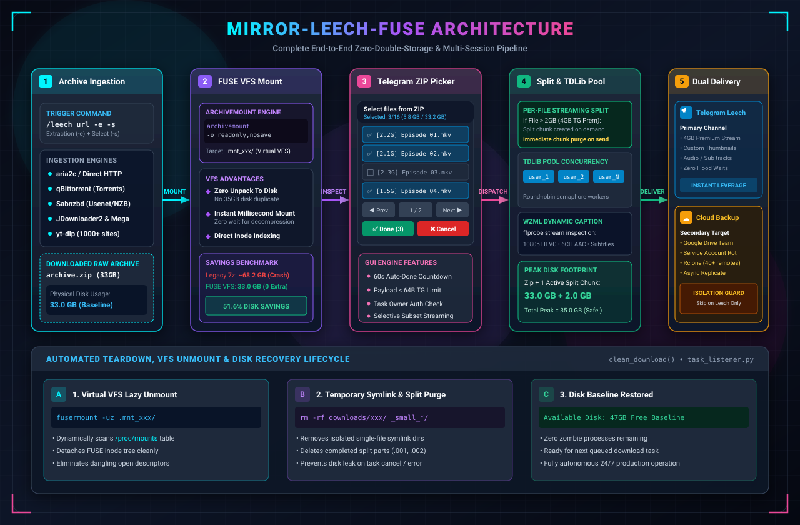
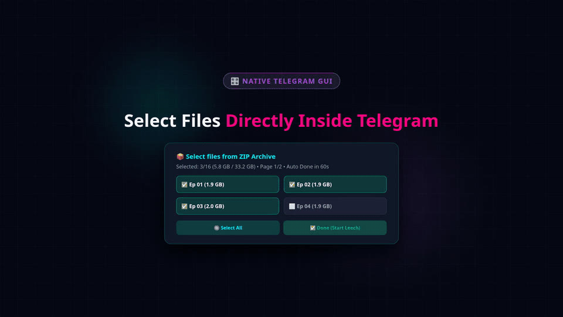

FUSE zero-double-storage engine
Archives are mounted through Linux VFS with archivemount (readonly,nosave) instead of being extracted. Peak storage is the archive plus one transient split chunk.
mirror-leech-telegram-bot-fuse mounts big archives straight into the Linux virtual file system with archivemount instead of extracting them to disk, lets you pick files from a Telegram inline keyboard, and uploads through a TDLib multi-session pool to Telegram, Google Drive or Rclone.
Classic mirror bots download an archive, extract everything with 7z x, then pre-split the files before uploading. A 33 GB season pack can need roughly 70 to 100 GB of local disk. This fork mounts the archive with archivemount -o readonly,nosave instead, reads each file on the fly, uploads it and purges the temporary split chunk straight away.
Peak disk is capped at the archive size plus one transient split chunk.
Everything below comes from the project README and docs.
Archives are mounted through Linux VFS with archivemount (readonly,nosave) instead of being extracted. Peak storage is the archive plus one transient split chunk.
/leech <link> -e -s opens a paginated keyboard with live sizes, per-file toggles, select all / deselect all, and a 60-second auto-continue timer.
Uploads rotate round-robin across several authenticated userbot sessions (tdlib_user, tdlib_user_2, ...). Supports files up to 4 GB with Premium.
Send the primary leech to Telegram, then asynchronously replicate the finished files to Google Drive or Rclone. Each destination has its own failure boundary.
ffprobe and langcodes read duration, audio languages and subtitle tracks and fill a caption template with {filename}, {size}, {duration}, {languages} and {subtitles}.
Direct HTTP(S) links, BitTorrent through aria2c and qBittorrent (with search plugins), Usenet via SABnzbd, JDownloader2 and yt-dlp.
Google Drive with OAuth or Service Account cycling, Team Drives, Mega.nz and 40+ Rclone storage backends.
An is_leech guard keeps /leech tasks from leaking into Google Drive, and cleanup unmounts leftover FUSE mounts with fusermount -uz.
Ships a Dockerfile and docker-compose.yml. FUSE needs cap_add: SYS_ADMIN and the /dev/fuse device.
The end-to-end execution pipeline, as described in the README and architecture docs.
/leech <url> -e -s starts the task. A download engine (aria2c, qBittorrent, SABnzbd, JDownloader2, yt-dlp or direct) fetches the archive.
The archive is mounted with archivemount (readonly,nosave) into a virtual .mnt_xxx directory. Nothing is extracted to disk.
With -s, an inline Telegram keyboard lists the files. Toggle what you want, or let the 60-second timer continue.
Each selected file is read from the mount. Files over 2 GB (4 GB with Premium) are split on the fly and sent through the TDLib pool or a Pyrogram worker, with a WZML caption.
Telegram is the primary destination. When configured, a secondary Google Drive backup runs asynchronously with an isolated failure boundary.
fusermount -uz unmounts the virtual disk and the workspace is cleaned, so disk usage returns to baseline.
Illustrative. Figures come from the README benchmark profile (33.0 GB ZIP, 80 GB SSD). Peak on the FUSE path is the archive plus one active split chunk.
Telegram throttles upload concurrency per account and can issue FloodWait penalties. The pool spreads multi-part uploads over several authenticated TDLib sessions managed by bot/core/tdlib_manager.py.
TG_FILE_UPLOAD_CONCURRENCY (8), TG_SPLIT_UPLOAD_CONCURRENCY (4) and TG_UPLOAD_WORKERS (16) are the defaults documented in the config dictionary.setup_tdlib_pool.py authenticates extra sessions interactively, and clone_tdlib_pool.py clones an authorized database into new slots.After the archive is mounted, the bot sends a paginated inline keyboard. Callback data is compacted to fit Telegram's 64-byte limit (zipsel <mid> <action> [args]).
archivemount daemon.Mock-up reproduced from the README example, including the WZML caption output (shown without emoji).
These images ship in the repository's docs/assets folder. The project README also links a full HD promo video.


demo.gif: the ZIP picker inside Telegram.The README links a 1080p 60 fps promo video and an animated demo GIF. Both are large files, so they stay on GitHub.
The README compares this fork with anasty17/mirror-leech-telegram-bot.
| Subsystem | Upstream MLTB (anasty17) | This fork | Benefit |
|---|---|---|---|
| Archive decompression | Full disk extract (7z x) | Linux FUSE (archivemount) | 50%+ disk savings, no raw extraction overhead |
| Selective extraction | CLI flags / all-or-nothing | Interactive Telegram ZIP picker | Paginated GUI, checkboxes, size preview |
| Archive splitting | Extract all, then split all | Streaming per-file split and purge | Peak storage capped at archive + 1 chunk (under 2.5 GB) |
| Telegram upload core | Single client / Pyrogram | TDLib multi-session pool | Round-robin account load balancing |
| Secondary backup | Telegram or cloud only | Dual leech + Drive backup | Independent failure boundary |
| Dynamic captions | Basic static text | WZML ffprobe engine | Codecs, duration, audio and subtitle tracks |
| Download engines | aria2, qBit, Sabnzbd | aria2, qBit, Sabnzbd, JD2, yt-dlp | Broader protocol and media-site coverage |
| Cloud sync | GDrive / Rclone | GDrive OAuth + SA + Rclone | Multi-remote management, SA rotation |
33.0 GB ZIP with 16 episodes (about 2.06 GB each) on an 80 GB SSD, 4-core VPS. These are the author's figures and were not independently reproduced here.
| Metric | Upstream (7z x) | This fork | Delta reported |
|---|---|---|---|
| Peak disk allocation | 88.2 GB (ENOSPC crash) | 35.4 GB (archive + 1 split) | -59.8% |
| Extraction-phase disk writes | 35.2 GB | 0.0 GB | -100% |
| Extraction latency | 6 to 12 min decompression wait | under 800 ms (virtual mount) | 99.8% faster readiness |
| Transient split overhead | +20.0 GB | +2.4 GB | -88.0% |
| Resident RAM (FUSE) | n/a (writes to disk) | 20 to 50 MB (index cache) | Low memory footprint |
| Upload concurrency | 1 account | Up to 10+ accounts round-robin | 10x headroom |
| Split upload throughput | Sequential blocking | Concurrent multi-worker | 3.2x real-world throughput |
Commands below are copied from the README. Run them on a Linux host.
/dev/fuse, plus a bot token from @BotFather and API credentials from my.telegram.org.git clone https://github.com/MHJoy99/mirror-leech-telegram-bot-fuse.git
cd mirror-leech-telegram-bot-fusecp config_sample.py config.py
# or cp config_sample.env config.env
nano config.pypython3 setup_tdlib_pool.py 3 tdlib_userMake sure cap_add: [SYS_ADMIN] and the /dev/fuse device mapping are present in docker-compose.yml:
services:
app:
build: .
command: bash start.sh
restart: on-failure
cap_add:
- SYS_ADMIN
devices:
- /dev/fuse
security_opt:
- apparmor:unconfined
volumes:
- ./downloads:/app/downloads
- ./accounts:/app/accounts
- ./thumbnails:/app/thumbnails
- ./tokens:/app/tokens
- ./rclone:/app/rclone
- ./qBittorrent:/app/qBittorrent
- ./sabnzbd:/app/sabnzbd
- ./token.pickle:/app/token.pickle
- ./credentials.json:/app/credentials.json
- ./cookies.txt:/app/cookies.txt
- ./.netrc:/app/.netrcdocker compose up -d --build# real-time container logs
docker compose logs -f app
# filter FUSE and upload events
docker compose logs --tail=100 -f app | grep -E "FUSE|archivemount|Upload|Leech"
# check active FUSE virtual mounts
grep "archivemount" /proc/mounts
# force-unmount lingering virtual mountpoints
fusermount -uz /app/downloads/*/.mnt_*| Command | What it does |
|---|---|
/leech <url> | Download and upload to Telegram |
/leech <url> -e | Mount via FUSE and leech all files |
/leech <url> -e -s | Mount via FUSE and show the inline ZIP picker |
/mirror <url> | Download and upload to Google Drive or Rclone |
/mirror <url> -e | Extract and mirror contents to cloud |
/ytdl <url> | Download media via yt-dlp, leech or mirror |
/status | Active downloads, speeds, ETA, progress |
/cancel <gid> or all | Cancel one task or all |
/bsettings | Global bot settings (admin only) |
/usettings | User settings: captions, split sizes, prefixes |
# Telegram bot credentials (placeholders)
BOT_TOKEN = "1234567890:ABCdefGHIjklMNOpqrsTUVwxyz"
OWNER_ID = 987654321
TELEGRAM_API = 1234567
TELEGRAM_HASH = "0123456789abcdef0123456789abcdef"
# TDLib multi-session pool
TDLIB_USER_DB_PATH = "tdlib_user"
TDLIB_USER_DB_PATHS = ["tdlib_user_2", "tdlib_user_3", "tdlib_user_4"]
TDLIB_USER_UPLOAD = True
# Concurrency tuning
TG_FILE_UPLOAD_CONCURRENCY = 8
TG_SPLIT_UPLOAD_CONCURRENCY = 4
TG_UPLOAD_WORKERS = 16
LEECH_SPLIT_SIZE = 2097152000 # 2GB (4194304000 for 4GB Premium)Full variable list: config_sample.py and the configuration dictionary.
Mount flags, streaming split pipeline and the picker in depth.
Provision and authorize multiple userbot sessions.
Pipeline stages, destination rules and error boundaries.
Docker Compose runbook with FUSE capability flags.
Token regeneration, storage and the keep-alive watchdog.
Full diff matrix against upstream MLTB.
Conventional Telegram mirror bots extract the whole archive to disk with 7z x, which can double storage use (for example a 35 GB ZIP plus 35 GB of extracted files). mirror-leech-telegram-bot-fuse instead mounts the archive read-only through a virtual file system directory with archivemount -o readonly,nosave. Files are read on the fly and uploaded one after another, so total disk use is bounded by the archive size plus a single active split chunk of about 2 GB.
No. According to the README, archivemount only parses the archive index headers into memory, roughly 20 to 50 MB. When ffmpeg or the uploader reads a specific file offset, archivemount seeks to that byte range and decompresses only the active stream buffer, so memory stays small and stable during multi-gigabyte transfers.
Telegram throttles upload concurrency per account and can issue FloodWait penalties under heavy load. The pool distributes multi-part uploads across several authenticated userbot sessions (tdlib_user, tdlib_user_2, tdlib_user_3 and so on) in round-robin rotation, and supports files up to 4 GB with a Premium account.
The setup guide notes that linear speed-up needs a distinct Telegram account for each pool slot. Sessions cloned from one account share that account’s bandwidth quota.
The streaming engine reads the file from the FUSE mount, writes split chunks one at a time into a temporary workspace, uploads each chunk through the worker pool, and purges each chunk from disk before starting the next. Disk usage therefore does not balloon, whatever the archive size. The split size is set with LEECH_SPLIT_SIZE (2 GB by default, 4 GB for Telegram Premium).
When it is configured, the bot first completes the primary Telegram leech and then starts an asynchronous secondary upload to Google Drive. The two destinations have independent failure boundaries: if Google Drive hits a quota limit or a timeout, the Telegram leech is still completed and delivered.
The archivemount daemon is single-threaded. Opening many concurrent file handles on the FUSE layer causes I/O contention and stalled transfers. For small files the bot uses an anti-choke sequential dispatcher that symlinks each file into an isolated temporary workspace and uploads them one by one.
The inline ZIP picker has a 60-second safety timer. Every file starts selected, and if nobody confirms in time the picker continues with the current selection so that automated batch tasks do not freeze indefinitely. Tapping Cancel Task aborts the task instead.
A Linux host (Ubuntu 22.04 or 24.04 LTS or Debian 12 recommended, kernel 6.8+), Docker Engine 24+ with Docker Compose v2, and FUSE support through /dev/fuse. The compose file must grant cap_add SYS_ADMIN and map the /dev/fuse device. You also need a bot token from @BotFather and API credentials from my.telegram.org. The bot targets Python 3.12+ and ships a Dockerfile.
Yes. It builds on python-aria-mirror-bot and anasty17’s mirror-leech-telegram-bot and adds the FUSE engine, ZIP picker, TDLib pool, dual backup and WZML captions. It is distributed under the GNU General Public License v3.0 and maintained by MHJoy99 and the MHJoyBots team. It is not affiliated with Telegram or Google.
Ingestion covers direct HTTP(S) links, BitTorrent through aria2c and qBittorrent, Usenet through SABnzbd, JDownloader2, Mega and yt-dlp for video and audio sites. Destinations include Telegram chats and channels, Google Drive (OAuth or Service Accounts, Team Drives) and Rclone remotes.